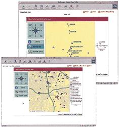

E-MAPS Show...
•Superfund sites
•Abandoned, idle or underused industrial/ commercial facilities.
• Air pollution emitted from electric power plants, steel mills, factories and universities.
• Facilities that use, manufacture, transport or release toxic chemicals.
• Businesses that generate, transport, treat, store and dispose hazardous waste; and companies that have permits to discharge waste water into rivers.
The Department of Housing and Urban Development (HUD) has a new feature on their Web site ( www.bud.gov/emaps ) that brings environmental information to your fingertips. HUD's environmental mapping application (E-MAPS) provides detailed information about ecohazards and government programming for anyone concerned about the well-being of a community. "In theory, this is a one-stop cyber-shopping site," says Lee Jones, HUD spokesperson.
The new mapping application was created by overlaying the environmental data of the Environmental Protection Agency (EPA) with the award-winning Community 2020 mapping software - a geographic CD-ROM program created by HUD in 1997 that allows citizens to monitor the spending of their tax dollars in communities nationwide.
The Web site met with immediate popularity when it debuted in mid-September. "We received 10,000 requests to print out [our] maps within the first four hours," Jones says. To accommodate the demand, HUD immediately began installing additional servers. According to Jones, the demand reflects the concern people have for their communities.
The HUD program is user-friendly, with colored maps, a glossary of technical terms and a zoom-in function - all that you need is a city name or zip code and the road to a cleaner neighborhood is just a mouseclick away.
-Kirsten Galisson
|
|
 |
|